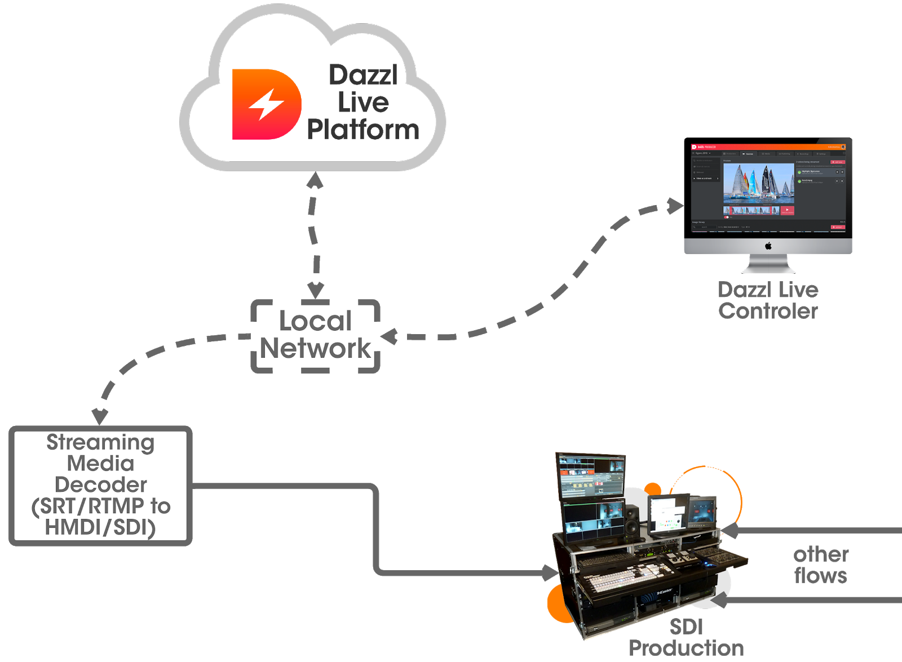
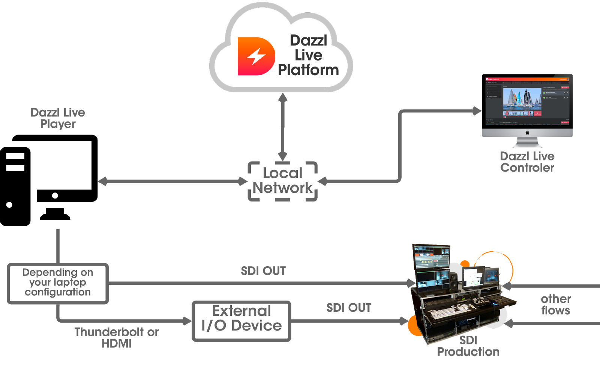
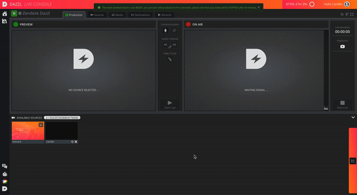

There are two ways to host the Dazzl outbound stream in your production system.
Using a decoder
You can use an SRT/RTMP decoder that encodes in HDMI/SDI, recovering the streams on the network (streaming media decoder).
This is the recommended option, which will give you the best quality.
This decoder will receive the Dazzl rtmp stream, and convert it to SDI/HDMI as shown in the picture below.

Using the Dazzl viewer
You can also use the Dazzl viewer, as shown in the image below.

To do this, go to the "destination" tab, then "broadcast team".
Open the viewer link in a new tab, and switch it to full screen.
You can then broadcast your live, by connecting the computer in HDMI.
